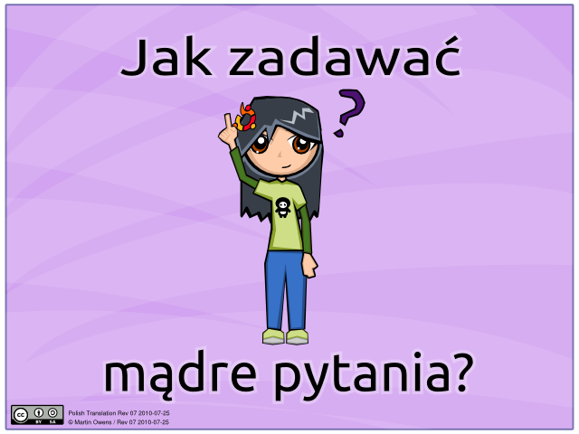

Opublikowano 28 lipca 2010 przez Franek
Chciałbyś otrzymać wsparcie ze strony społeczności Ubuntu oraz uzyskać odpowiedzi na nurtujące cię pytania? Więc być może ten przewodnik okaże się dla Ciebie pomocny.

Pobierz przewodnik w formacie PDF.
Jeśli uważasz, że tłumaczenie nie jest dobre, nie krzycz, nie bluzgaj, tylko zaloguj się na launchpad.net i popraw co uważasz za błędne. :>

Opublikowano 15 lipca 2010 przez Franek
Jakiś czas temu zaprzestałem używać Basha na rzecz Zsh, zacząłem wtedy szukać informacji oraz porad odnośnie konfiguracji tej powłoki i tak trafiłem na Oh My Zsh. Jest to framework do zarządzania konfiguracją Zsh Czytaj dalej »

Opublikowano 14 lipca 2010 przez Franek
Z systemowego schowka korzystamy bardzo często, to dzięki niemu działa funkcja kopiuj → wklej. Standardowy schowek w który są wyposażone nasze systemy nie zapewnia jednak wielu przydatnych funkcjonalności. Można to jednak zmienić za pomocą zewnętrznej aplikacji jaką jest menedżer schowka. Jest to program który podnosi funkcjonalność systemowego schowka, dodając nowe przydatne opcje.
Czytaj dalej »

Opublikowano 14 lipca 2010 przez Franek
Aplikacje przenośne są to programy, które nie wymagają instalacji. Dlatego można je uruchomić na dowolnym komputerze, można je na nagrywać na przenośne nośniki danych i z nich je włączać. Najwygodniejsze jest chyba przygotowanie sobie pendrive na który kopiujemy takie aplikacje, zyskujemy przez to możliwość pracy z własnymi aplikacjami i ustawieniami na wszystkich komputerach do których podłączymy pendrive. Czytaj dalej »

Opublikowano 13 lipca 2010 przez Franek
Network Manager zaczął mnie wnerwiać, czasami nie widzi modemu, przez co nie chce łączyć się przez ppp0. Postanowiłem pozbyć się go. W końcu i tak łączę się tylko z Play Online oraz jedną siecią po eth, więc Network Manager wydał mi się zbędny. Czytaj dalej »

Opublikowano 08 lipca 2010 przez Franek
Onlitor to prosty lecz bardzo przydatny skrypt ułatwiający zarządzanie modemem w ofercie Play Online na kartę. Dzięki niemu w łatwy sposób można:
- przeczytać smsy
- doładować konto
- sprawdzić siłę zasięgu
- usunąć przeczytane smsy
- sprawdzić stan konta
Czytaj dalej »

Opublikowano 08 lipca 2010 przez Franek
Conky już kiedyś starałem się opisać, teraz chciałem pokazać moją konfigurację tego programu. Dostałem ją od kumpla oraz przerobiłem wedle własnego uznania :] Informacje o zużytym transferze pochodzą z vnstat, informacje o słuchanym utworze z MPD, okładka wyświetlana jest za pomocą skryptu mojego autorstwa (skrypt do działania potrzebuje mpc).
Czytaj dalej »

Opublikowano 08 lipca 2010 przez Franek
Remuco to system zdalnej kontroli odtwarzaczy multimediów dla systemu Linux oraz telefonów wyposażonych w bluetooth lub wifi.
Dzięki Remuco można zdalnie kontrolować ulubiony odtwarzacz multimediów. Odbywa się to za pomocą przycisków w telefonie które możemy skonfigurować wedle uznania. Czytaj dalej »

Opublikowano 01 czerwca 2010 przez Franek
nginx (wymawiamy jako engine x) jest to serwer WWW oraz serwer proxy dla HTTP i IMAP/POP3. Zaprojektowany on został z myślą o wysokiej dostępności w silnie obciążonych serwisach, podczas jego projektowania duży nacisk kładziono na jego skalowalność oraz niskie wymagania sprzętowe. Serwer ten nie posiada takiej popularności jak Apache, wykorzystywany jest jednak na wielu dużych serwisach między innymi nasza-klasa.pl, wordpress.com czy sourceforge.com. nginx napisany został przez Igora Sysojewa i wydawany jest na licencji BSD. Czytaj dalej »

Opublikowano 01 czerwca 2010 przez Franek
Możliwe, że wielu użytkowników Linuxa ucieszy fakt iż popularny klient sieci BitTorrent uTorrent doczeka się swojej wersji na Linuxa. Półki co nie znamy żadnych szczegółów samej aplikacji jak i terminu jej wydania, wiadomość ta jest jednak potwierdzona przez developerów uTorrent. Ja i tak pozostanę przy rTorrencie :)

Opublikowano 01 czerwca 2010 przez Franek
W numerze między innymi:
Czytaj dalej »

Opublikowano 31 maja 2010 przez Franek
Tytuł orginalny “Free as in Freedom: Richard Stallman’s Crusade for Free Software” jest to książka opublikowana na licencji GNU Free Documentation License, opowiada ona o życiu Richarda Stallman’a twórcy ruchu wolnego oprogramowania, założyciela projektu GNU oraz Free Software Foundation. Została napisana przez amerykańskiego dziennikarza Sam William’s oraz opublikowana 12 marca 2002 roku przez wydawnictwo O’Reilly Media. Książka doczekała się również polskiego tłumaczenia za sprawą Krzysztofa Masłowskiego oraz została wydana przez wydawnictwo Helion. Zapraszam do przeczytania książki, jak ją wydrukuję, to przeczytam :]
Owy wpis dedykuje Beacie, która jest molem książkowym. KY :D

Opublikowano 31 maja 2010 przez Franek
Music Player Daemon w skrócie MPD to bardzo specyficzny multiplatformowy odtwarzacz muzyczny ponieważ działa on jako serwer dźwięku. Spisuje się on bardzo dobrze, zużywa bardzo mało zasobów, odtwarza popularne formaty muzyczne (MP3, MP2, MP4, ACC, MOD, WAV, Ogg Vorbis). Przy czym pozwala, na wyszukiwanie utworów, zarządzanie playlistami i obsługuje tagi muzyczne. Do jego obsługi potrzebna jest aplikacja kliencka, która łączy się z serwerem, co pozwala na jego kontrolę. Dzięki temu MPD może pracować na domowym serwerku, a my kontrolujemy go zdalnie z desktopa. Czytaj dalej »

Opublikowano 31 maja 2010 przez Franek
Bardzo przydatny ficzer, szczególnie kiedy nasz CPU nie grzeszy wydajnością aby uruchamiamy jakąś mocno obciążającą procesor czynność taką jak konwersja wideo, czy kompilacja programów. Można jednak łatwo ograniczyć użycie czasu procesora dla danych aplikacji za pomocą cpulimit. Czytaj dalej »

Opublikowano 31 maja 2010 przez Franek
rTorrent – jest tekstowym klientem sieci BitTorrent na licencji GPL, rozwijanym przez Jariego Sundella (pseudonim Rakshasa). Został napisany w języku C++ z nastawieniem na wysoką wydajność i poprawny kod. Wykorzystuje bibliotekę libTorrent (własną, nie libtorrent z sourceforge) dla systemów uniksowych. Interfejs użytkownika jest napisany w oparciu o bibliotekę ncurses. Własna biblioteka libTorrent różni się od innych wersji transmisją danych bezpośrednio między stronami pamięci zmapowanymi przez funkcję mmap() a stosem sieciowym. Na łączach o wysokiej przepustowości potrafi wysyłać dane kilkukrotnie szybciej niż oficjalny klient BitTorrent. Pakiety rTorrenta są dostępne na różne dystrybucje Linuksa i Uniksa oraz można go uruchamiać i kompilować w prawie każdym systemie operacyjnym zgodnym z POSIX, takim jak na przykład FreeBSD. Dzięki interfejsowi tekstowemu można używać go w programach typu screen i dtach. Obsługuje zachowywanie sesji i pozwala użytkownikom na dodawanie i usuwanie torrentów. Oferuje także częściowe ściąganie torrentów zawierających wiele plików. Od wersji 0.7.0 obsługuje także szyfrowanie. rTorrent wspiera również rozproszone tablice mieszające i super-seeding. rTorrent może być obsługiwany przy pomocy XML-RPC. – Osobiście bardzo lubię tą aplikację i jest ona jedyną jaką wykorzystuję do pobierania nowych dystrybucji GNU/Linuxa z sieci BitTorrent ;) Czytaj dalej »